음료 · 커피 자판기
가장 문의가 많은 기본 기종입니다. 캔음료·생수·이온음료·탄산·건강음료를 냉장으로 채우고, 사무실·오피스에는 원두커피자판기나 캡슐커피자판기를 함께 두는 경우가 많습니다.
- 보관냉장 (음료 전용)
- 추천 입지사무실 · 헬스장 · 아파트
- 주력 품목캔음료 · 생수 · 커피
생수자판기캔음료자판기원두커피캡슐커피
홈 / 자판기소개
MACHINES무인자판기는 부르는 이름도, 담는 품목도 다양합니다. 무인판매기·자동판매기부터 원격 관리가 되는 스마트자판기·AI자판기, 화면에서 결제하는 키오스크 자판기까지 있습니다. 아래 기종별 특징을 보시고, 매장 여건에 맞는 구성을 상담해 드립니다.
가장 문의가 많은 기본 기종입니다. 캔음료·생수·이온음료·탄산·건강음료를 냉장으로 채우고, 사무실·오피스에는 원두커피자판기나 캡슐커피자판기를 함께 두는 경우가 많습니다.
과자·초콜릿·컵라면·간식류를 한 대에 담습니다. 회사·관공서·공장 휴게실과 탕비실에 두는 직원전용 스넥자판기·간식자판기 문의가 특히 많고, 사내 복지용으로 회사가 일부를 부담하는 방식도 가능합니다.
아이스크림부터 냉동식품·밀키트까지 담는 냉동 기종입니다. 무인 아이스크림 할인점, 아파트 단지, 사우나·찜질방처럼 여름 회전이 큰 자리에서 강합니다.
세면용품·수건·면도기·위생용품처럼 사람이 오래 머무는 시설에서 필요한 물건을 판매합니다. 병원·역 주변은 화장품자판기·마스크자판기, 아파트 단지는 반찬자판기·계란자판기 문의가 많습니다.
품목이 섞이는 자리를 위한 구성입니다. 한 대 안에서 냉장·상온 칸을 나눠 음료와 잡화를 함께 팔고, 화면에서 고르고 결제하는 멀티키오스크 형태로도 설치합니다.
성인인증이 필요한 주류자판기, 전자담배 자판기처럼 인증 절차가 붙는 품목도 구성 가능합니다. 꽃자판기·문구자판기·애견용품자판기 같은 특수 품목도 매장 성격에 맞춰 제작·세팅합니다.
기종별 정확한 규격·슬롯 수·소비전력은 제조사와 모델에 따라 다릅니다. 설치 예정 공간의 크기와 전기 여건을 확인한 뒤 실제 모델과 사양을 안내해 드립니다.
가장 많이 찾으시는 품목은 음료·커피·생수·과자·컵라면입니다. 다만 같은 기종이라도 자리에 따라 채우는 구성이 달라집니다.
| 설치 장소 | 추천 기종 | 잘 나가는 품목 |
|---|---|---|
| 사무실 · 오피스 | 음료 + 원두/캡슐커피 | 커피 · 생수 · 캔음료 |
| 공장 · 교대 근무지 | 음료 + 스낵 | 야식류 · 컵라면 · 에너지음료 |
| 아파트 단지 | 냉장 + 냉동 | 생수 · 아이스크림 · 반찬 · 계란 |
| 헬스장 | 냉장 음료 | 이온음료 · 단백질 음료 · 생수 |
| 스터디카페 · 독서실 · PC방 | 음료 + 스낵 | 커피 · 간식 · 컵라면 |
| 사우나 · 찜질방 | 냉장 + 냉동 + 잡화 | 음료 · 아이스크림 · 세면용품 · 수건 |
| 병원 · 약국 · 역 주변 | 음료 + 잡화 | 음료 · 화장품 · 마스크 |
| 캠핑장 · 펜션 · 낚시터 | 복합(멀티) | 음료 · 간식 · 생필품 |
| 학교 앞 · 학원가 문구점 | 문구 자판기 | 노트 · 펜 · 지우개 · 미술/사무용품 |
무인문구점을 새로 열거나 기존 문구점에 문구 자판기를 두면, 야간·주말에도 학용품 자판기·문구용품 자판기로 24시간 판매됩니다. 노트·펜·지우개 같은 학용품부터 미술·사무용품까지 담을 수 있어 학교 앞, 독서실·스터디카페 옆 문구점에 특히 잘 맞습니다.
현금 없이도 팔리고, 현장에 가지 않아도 매출이 보입니다.
신용카드·체크카드는 기본이고 삼성페이·카카오페이·네이버페이·토스페이·QR 간편결제까지 한 대로 처리합니다. 키오스크 결제도 동일하게 지원합니다.
어떤 품목이 언제 몇 개 팔렸는지, 무엇이 떨어졌는지 원격으로 확인합니다. 보충 시점을 데이터로 잡을 수 있어 헛걸음이 줄어듭니다.
화면이 달린 스마트 자판기는 대기 시간에 광고나 시설 안내·이벤트 고지를 띄울 수 있습니다. 광고 송출까지 필요하신 경우 화면형 기종으로 맞춤 구성합니다.
실제 기기의 구성과 기능을 담은 제품 안내 이미지입니다. 기종에 따라 사양이 다를 수 있습니다.
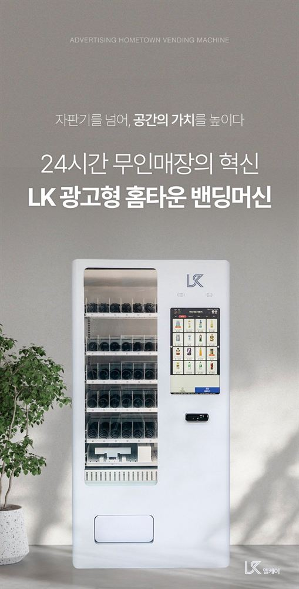
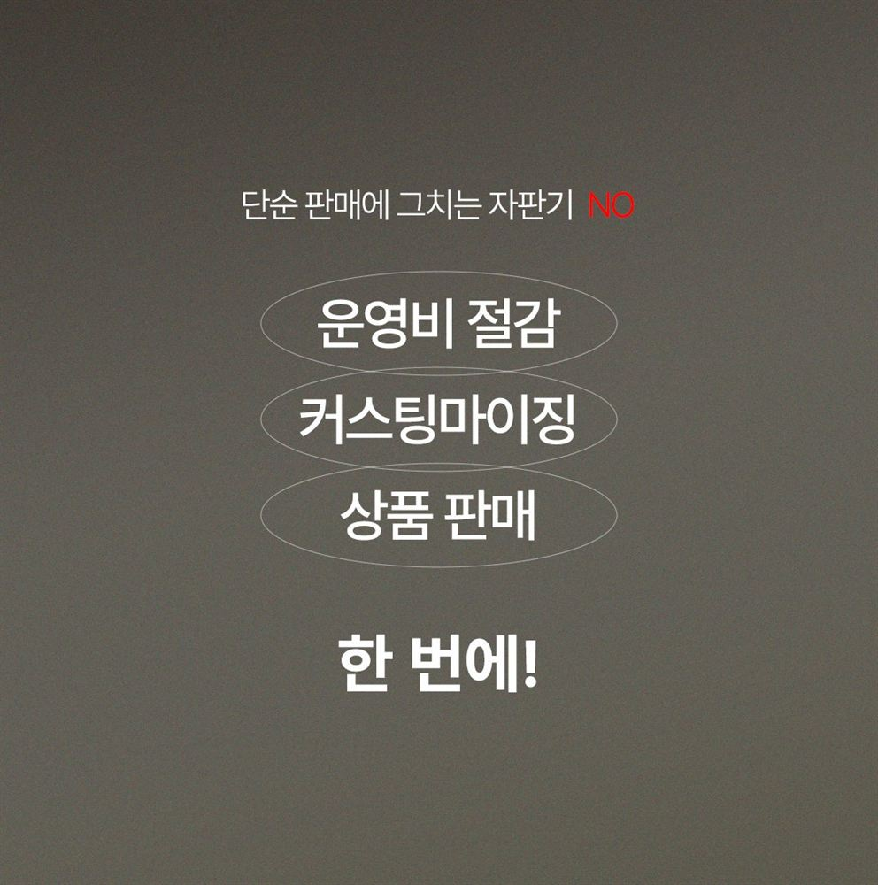
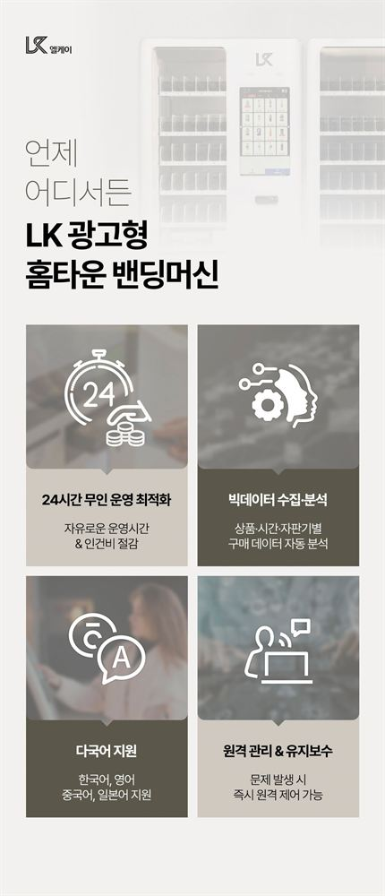
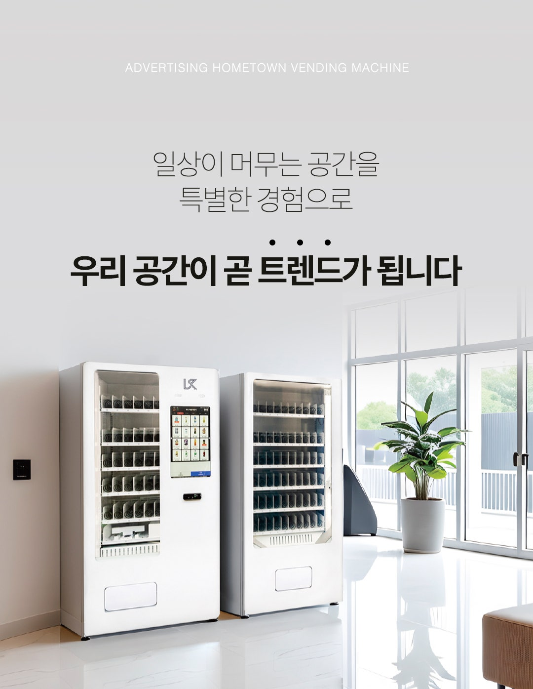
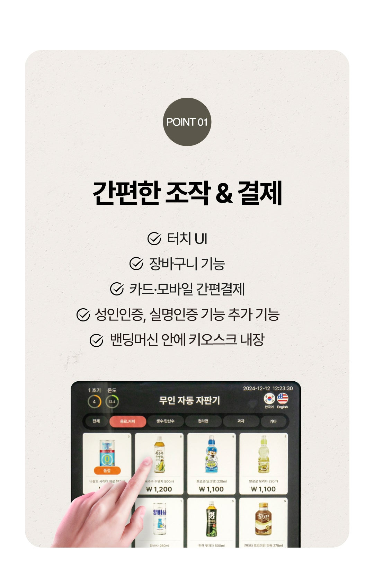
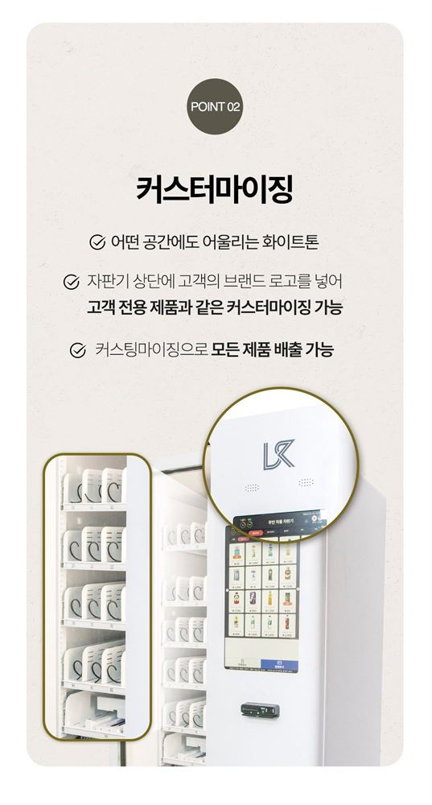
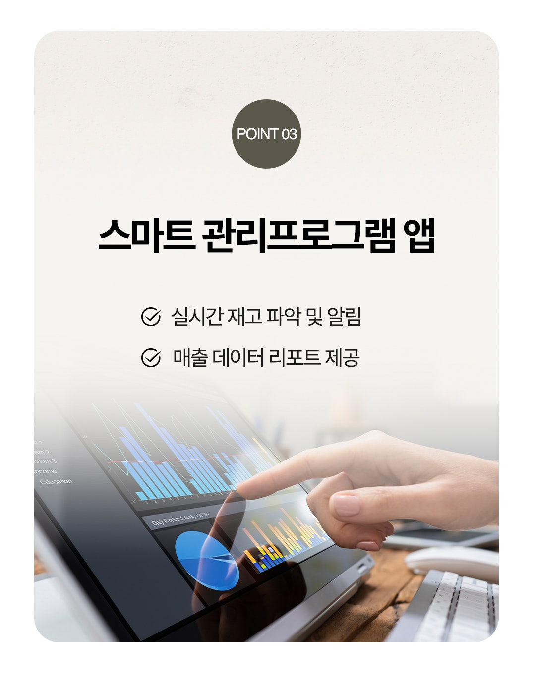

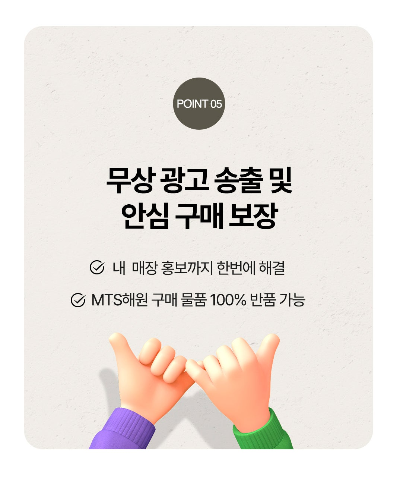
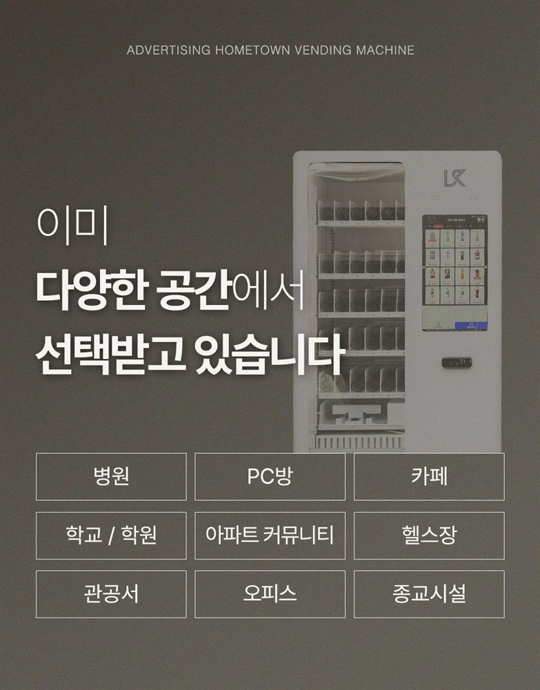
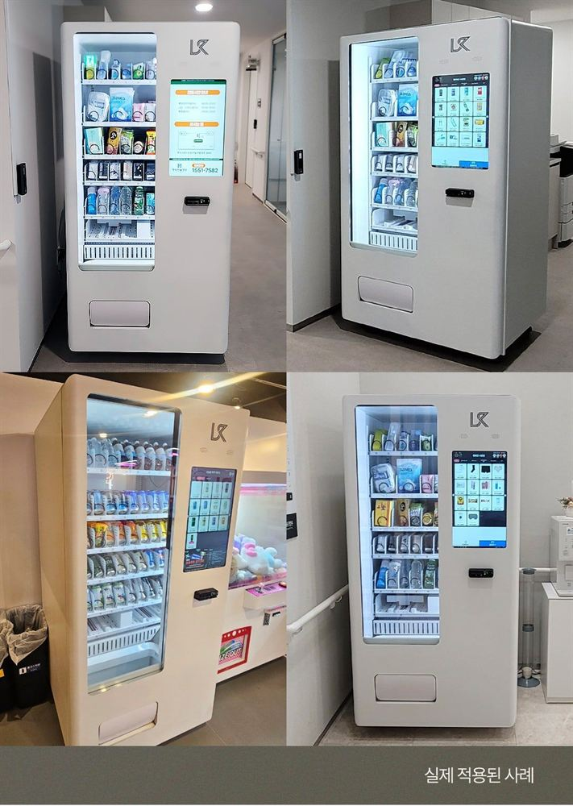
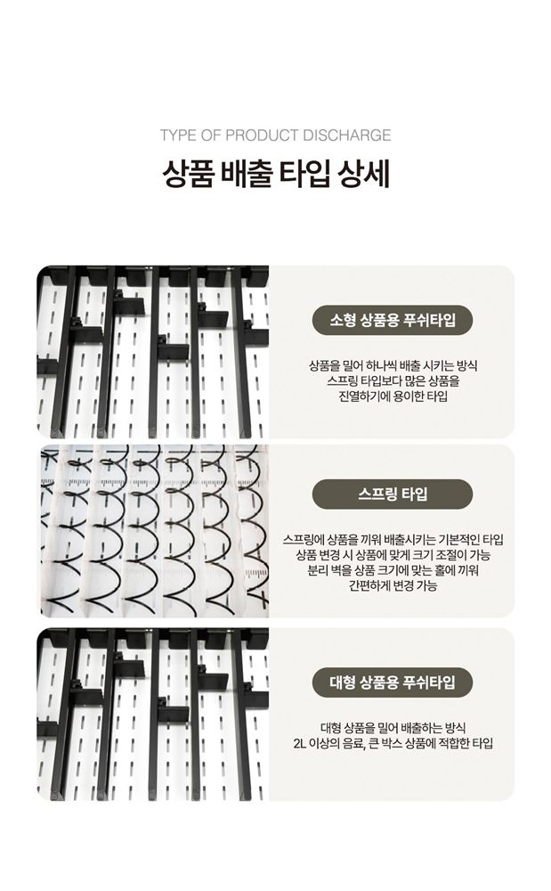
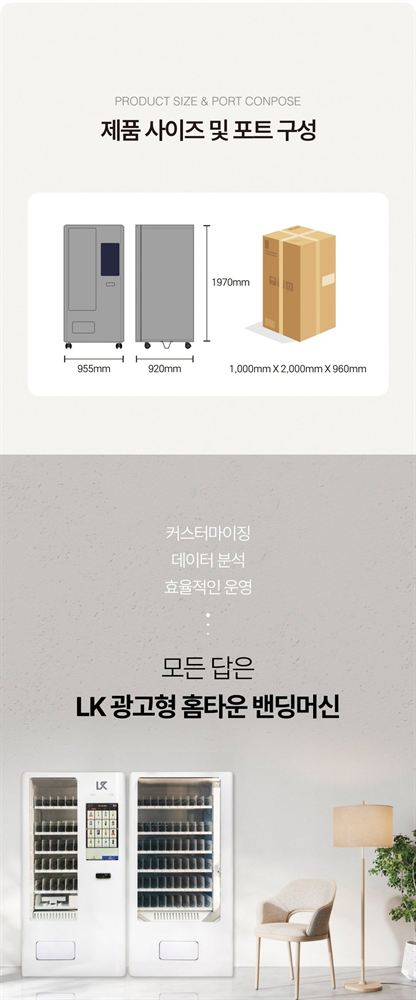

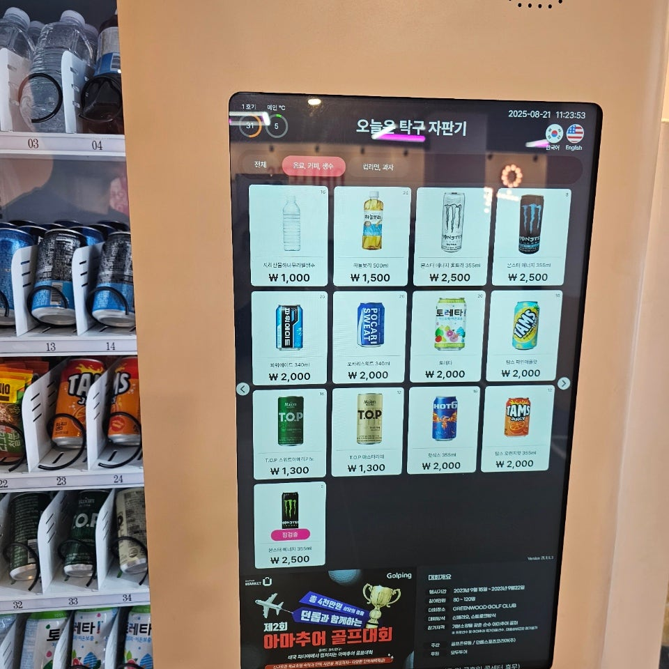

무인매장·무인카페·무인아이스크림·무인사진관·셀프주문 매장에서 주문부터 결제까지 직원 없이 처리합니다. 좁은 매장을 위한 미니키오스크부터 대형 스탠드형까지 매장 크기와 업종에 맞춰 구성합니다.
관공서와 학교에서는 무인자판기를 자동판매기 · 셀프자판기라는 이름으로도 부릅니다. 입찰 공고와 계약 서류도 그 이름으로 나옵니다. 학교자판기, 구청무인자판기, 지하철역자판기 설치를 같은 방식으로 진행하며, 공공기관 자동판매기는 입지 선정부터 서류까지 함께 챙겨 드립니다.
호텔·모텔·사우나·찜질방, 애견셀프목욕 매장처럼 사람이 오래 머무는 곳도 회전이 빠릅니다.
이미 쓰고 계신 자판기가 있다면 교체나 이전 설치도 함께 상담합니다. 자판기를 알아보실 때 롯데자판기처럼 이미 많이 쓰이는 제품을 함께 비교해 보시는 분이 많은데, 브랜드보다 자리와 품목에 맞는지가 먼저입니다.
무인자판기 구입·구매도 되고, 임대·렌탈로 초기 부담 없이 시작하실 수도 있습니다. 어느 쪽이 유리한지는 운영 기간과 자리에 따라 갈립니다.
| 방식 | 이런 분께 | 특징 |
|---|---|---|
| 구입 | 자리가 확실하고 오래 운영할 계획 | 장기적으로 총비용이 낮음 |
| 렌탈 | 초기 비용을 낮추고 싶은 경우 | 월 납입 · 관리 포함 구성 가능 |
| 임대 / 대여 | 먼저 테스트해 보고 싶은 경우 | 부담이 가장 적고 철수도 쉬움 |
무인자판기 가격·비용·창업비용은 기종과 품목, 설치 여건에 따라 달라집니다. 정확한 금액은 현장 확인 후 견적으로 안내해 드리며, 설치비는 무료로 진행됩니다.